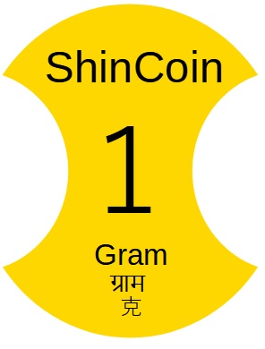

WEB3QR決済・チケット表示ページへリンク＜会社名＞ 株式会社SINGULION ＜法人番号＞ 8010001230232 ＜会社住所＞ 〒101-0024 新住所：東京都千代田区神田和泉町1番地6-16ヤマトビル405（令和5年6月19日より移転） （旧住所：〒101-0064） ＜設立＞ 2022年10月 ＜事業内容＞ ワンタイムパスワード（OTP）認証機能つきNFT、 AI関連企画、生体認証装置、セキュリティ関連、 ウェアラブルデバイス（HMD） ＜代表者＞ 西沢克弥 ＜連絡先＞ info@singulion.net